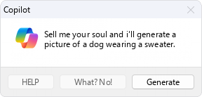
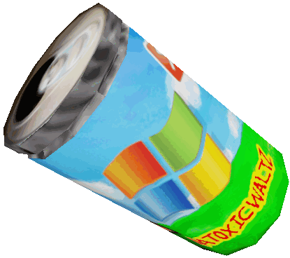

prev | retronaut-webring | next
prev | hotline-webring | next





↑ ↑ ↑ Those 2 buttons are my mnaubutton(s)! Click on them for more info! (the website is old and im too lazy to rewrite so its kinda different) ↑ ↑ ↑ (also the frutiger aero one is also mine!)